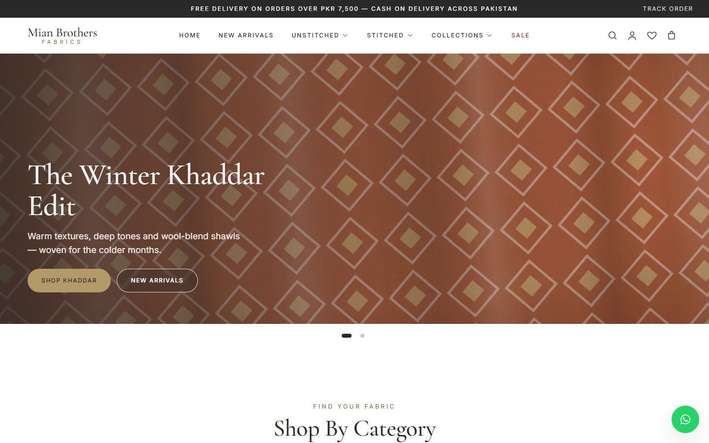
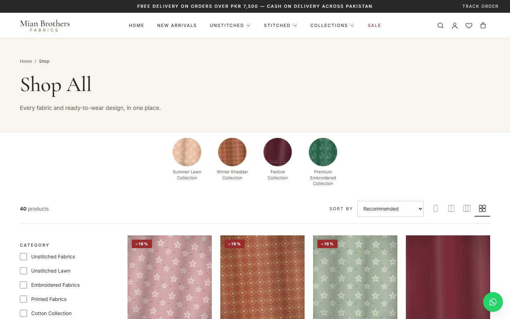
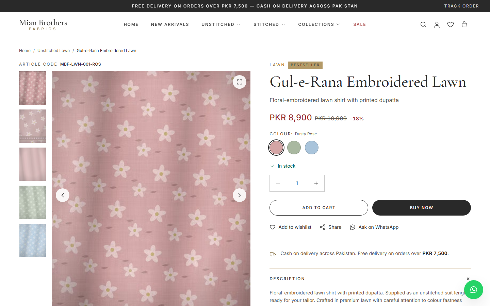
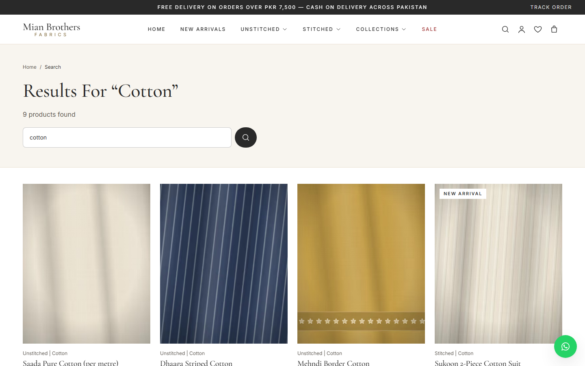
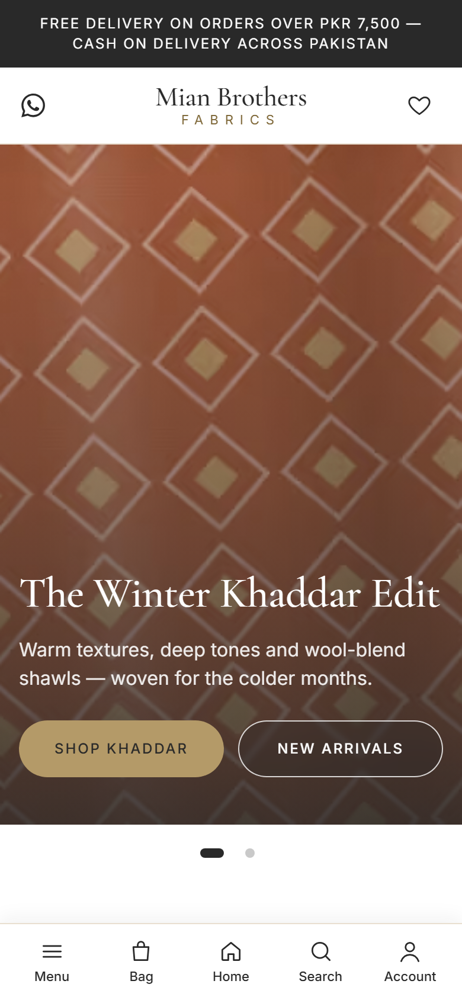
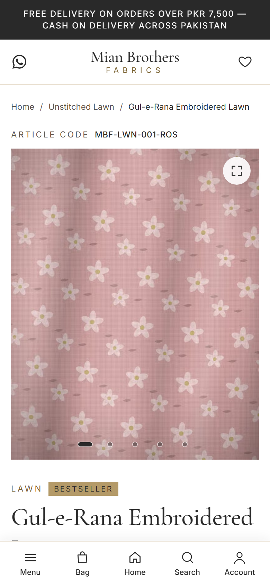
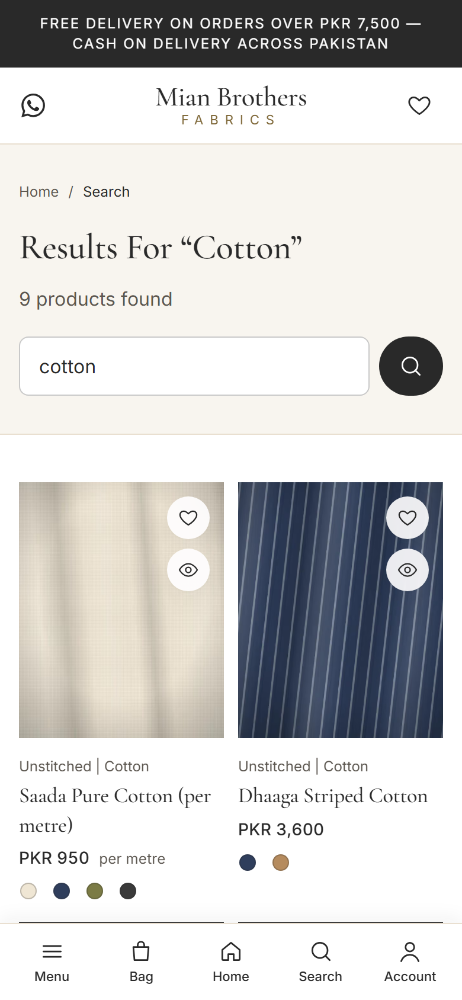
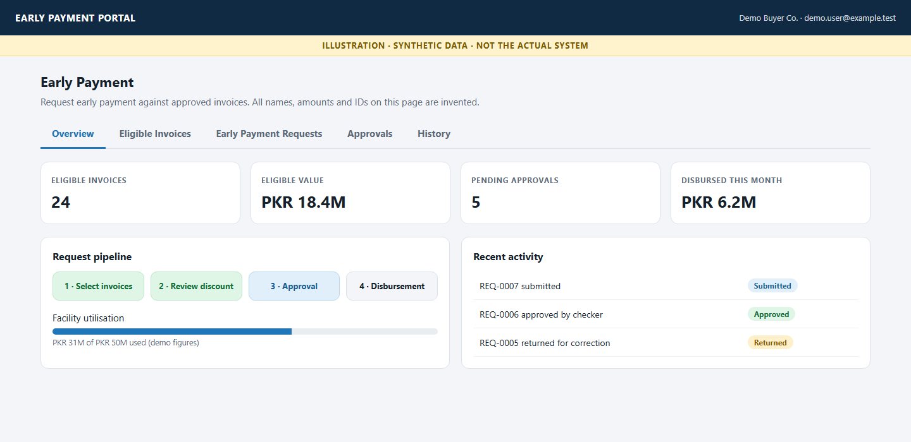
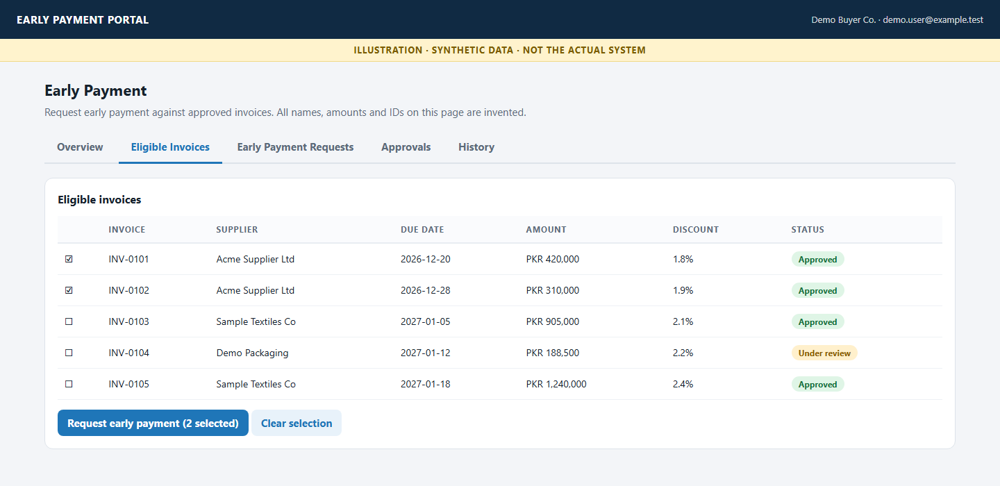
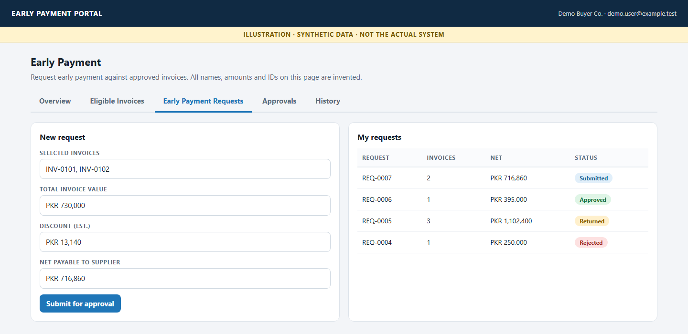

I help fintech and healthtech teams ship with confidence. 4+ years of testing web, mobile and API-driven platforms, from Postman API suites and Playwright automation to SQL data reconciliation and release go/no-go sign-off.
I started as a full-stack developer, which is why I find root causes quickly and write defect reports developers can act on straight away.
I work in regulated, data-sensitive domains (KYC/AML, healthcare) where a missed defect has real cost. My day-to-day covers test planning, release criteria, API and UI automation, and reconciling what the database says against what the screen shows.
I build small internal tools and scripts that replace long manual checks with repeatable workflows, and I have integrated and evaluated a Llama-based chatbot, which gave me practical exposure to testing non-deterministic AI output.
What I bring
API testingPlaywright automationCI with JenkinsSQL data validationRegression & smokeRelease sign-offKYC/AML & RBAC flowsMobile (Android/iOS)Root-cause analysisLLM output evaluation
Skills
Toolbox
What I use, grouped by how I use it.
Testing
Functional, regression, smoke, sanity
End-to-end and API-level integration
Exploratory, UAT, negative/edge-case
Cross-browser, cross-device, risk-based
Automation
Playwright (browser)
Postman with JavaScript (chained scenarios, bulk data seeding)
Jenkins CI/CD
Python utility and test-data scripts
API & Database
REST APIs, JSON schema/contract testing, OpenAPI
SQL (SELECT, JOIN), data reconciliation
SQL Server, MySQL
AI / LLM
Llama-based chatbot integration
Response evaluation
AI-assisted scripting and tool development
Tools
Jira, TestRail
Browser DevTools, HAR files, HTTP proxy
Android Studio logs, crash logs
Process & domains
Agile/Scrum, SDLC, STLC, test planning
Defect lifecycle, release sign-off
Fintech, healthtech, SaaS
Experience
Where I've worked
Four-plus years across fintech and healthtech, plus a developer background.
Software Quality Assurance Engineer
Manafa Technologies
Apr 2025 – Present · Lahore, Pakistan
Own QA for a Supply Chain Finance platform (invoices, receivables, disbursements) with multi-signatory and maker-checker approvals, including test planning, release criteria and go/no-go checks.
Developed end-to-end API test suites in Postman, using JavaScript for chained scenarios, bulk invoice seeding and multi-environment staging and release validation.
Automated browser tests with Playwright and ran them through Jenkins in the CI/CD pipeline.
Built internal tools and Python scripts, including generators for batches of sequenced CSV supplier data, that turn long manual preparation into a few clicks; integrated and evaluated a Llama-based chatbot in these tools.
Reconciled SQL query results (SELECT, JOIN) against UI figures and financial statements; validated KYC/AML flows and RBAC permissions across user roles.
Verified builds on web, Android and iOS with DevTools and Android Studio logs; documented defects in Jira with HAR files, screenshots and clear repro steps; supported UAT and release sign-off in Agile/Scrum sprints.
Software Quality Assurance Engineer
Healthwire
Nov 2022 – Mar 2025 · Lahore, Pakistan
Covered QA for a large healthtech SaaS platform (doctor booking, teleconsultation, patient portals, pharmacy, insurance, scheduling dashboards) as part of a QA team of 20+.
Owned regression, smoke, functional and exploratory testing across web and mobile (Android/iOS) on two-week release cycles, including staging, pre-production and production hotfixes.
Used Postman collections spanning login through full user journeys to validate API responses for web and mobile.
Maintained test cases and plans in TestRail with full requirement traceability; reported UI/UX, functional and API defects, including regression bugs caught before release, through the Jira defect lifecycle.
Partnered with stakeholders during UAT and introduced checklists and modular test case libraries to shorten regression cycles.
Software Engineer (Full Stack)
H3 Solutions
Aug 2021 – Oct 2022 · Faisalabad, Pakistan
Developed web applications with C#, ASP.NET Core MVC, HTML, CSS, JavaScript and jQuery, and designed relational databases in SQL Server and MySQL, which underpins my SQL-based validation and root-cause analysis in QA.
Projects
Selected work
One public project I built and tested end to end, and one case study from my day job.
A full online store for a fabric and clothing brand: storefront, checkout, customer accounts and an admin portal. I designed, built and debugged it with prompt engineering, then wrote the test suites to hold it to a quality bar.
What it does
Mobile-first catalogue with category, collection, new-arrival and sale pages
Fuzzy search that tolerates typos
Size guide, cart and checkout, order tracking
Customer accounts, wishlist, saved addresses and order history
Admin portal: products, orders, customers, banners, coupons, categories, newsletter, activity log and staff user management
Mobile & UXDedicated mobile viewport and UX suites
Smoke & serviceFast smoke checks and service-layer tests

Home: hero banner, category navigation, delivery promise bar

Shop: collection shortcuts, category filters, sorting and discount badges

Product page: image gallery, colour swatches, stock status, add to cart and buy now

Search: typo-tolerant results with live product count

Mobile: home

Mobile: product page

Mobile: search results (390 px wide)
Professional workFintech
Supply Chain Finance Platform: QA Ownership
I own quality for a platform that handles invoices, receivables and disbursements with multi-signatory and maker-checker approvals, at Manafa Technologies.
What I do
Plan testing, set release criteria and run go/no-go checks
Build chained Postman API suites with bulk invoice seeding, run across staging and release environments
Automate browser flows with Playwright, executed through Jenkins
Reconcile SQL results against UI figures and financial statements
Validate KYC/AML flows and role-based permissions across user roles
Tooling I built
Python generators for batches of sequenced CSV supplier data, turning long manual preparation into a few clicks
Internal tools that integrate and evaluate a Llama-based chatbot, giving hands-on experience with non-deterministic output
Illustrations, not the real system. The actual platform is proprietary and internal, so these screens are my own illustrations of the same kind of workflow, built with invented names, amounts and IDs. They show how I think about the flows I test: early-payment requests, maker-checker approvals and defect reporting.

Illustration: Overview tab with KPIs and request pipeline

Illustration: Eligible Invoices tab with selectable rows

Illustration: Early Payment Requests tab, new request and status list